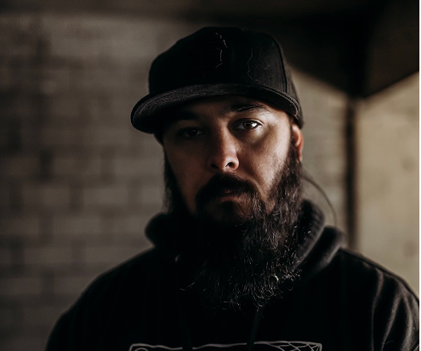

Design Systems Must Evolve
Design systems have come a long way, from static pattern libraries and scattered documentation to today's token-driven, cross-functional foundations. But the evolution isn't over.
Background & Writing
Who I am, how I work, and what I think.

I have a passion for design. That will become obvious. It's never been a "job" or "work" for me. I just simply enjoy it.
My design process is objective, focused on defining the problem to a fault. To a point that the problem becomes so clear, the solution becomes obvious. Establish a clear directive and approach, then drive it end-to-end.
No matter the product or company, I come to the table with a perspective that product design and design systems are as much about the business and organization as they are about the end-user.
Campaigner ENFP-A
Articles on design systems, product design, leadership, and the craft of building well.
Design systems have come a long way, from static pattern libraries and scattered documentation to today's token-driven, cross-functional foundations. But the evolution isn't over.
In the world of digital mobile app products, having a clear product owner is of utmost importance in ensuring the success of a product.
You are not your experience. You are your talents and abilities. Experience shapes, but it does not define you.